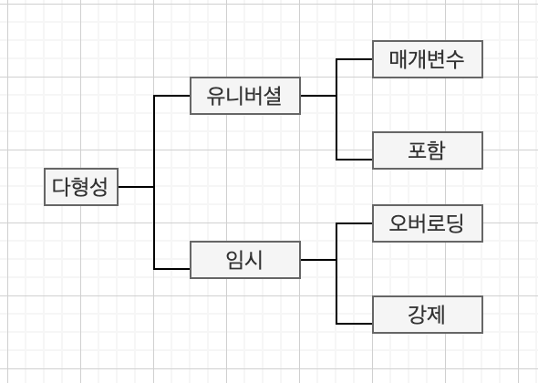
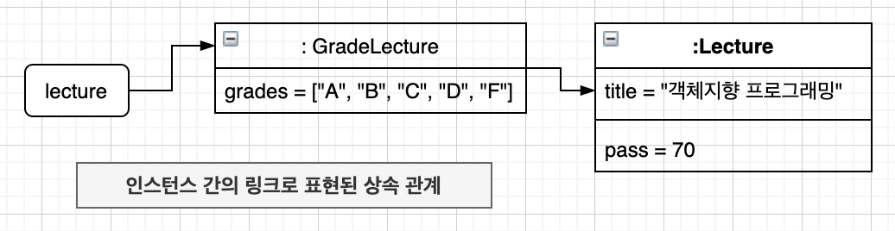
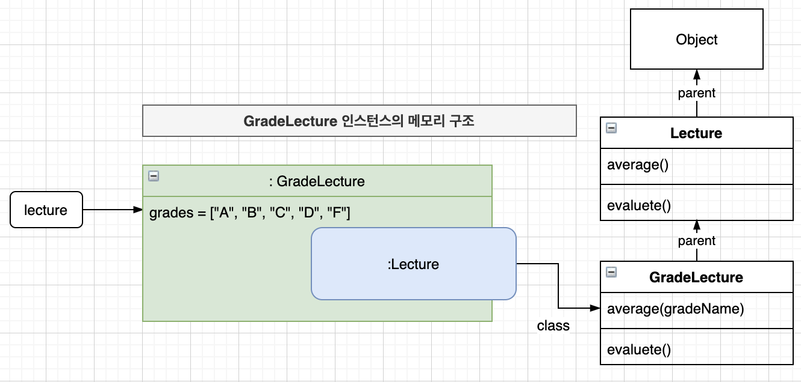
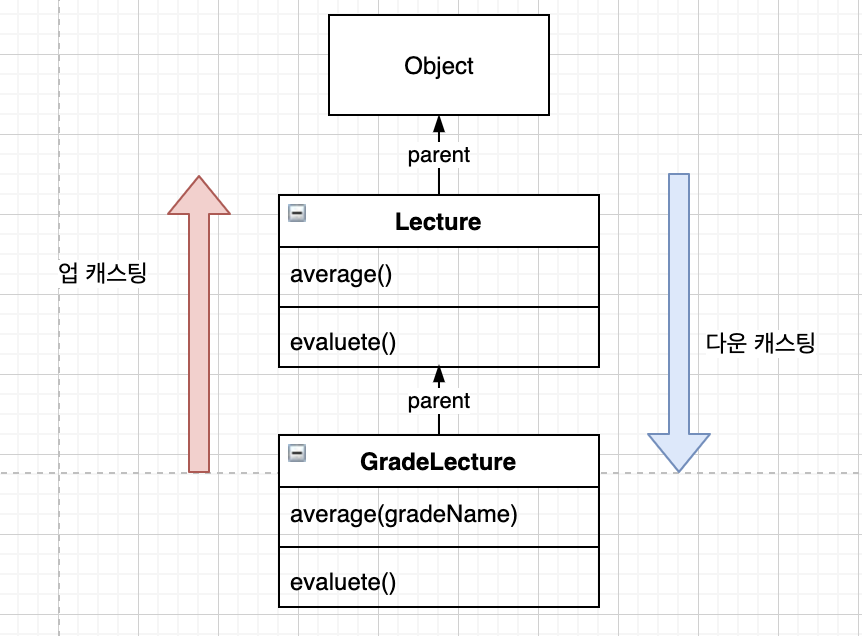
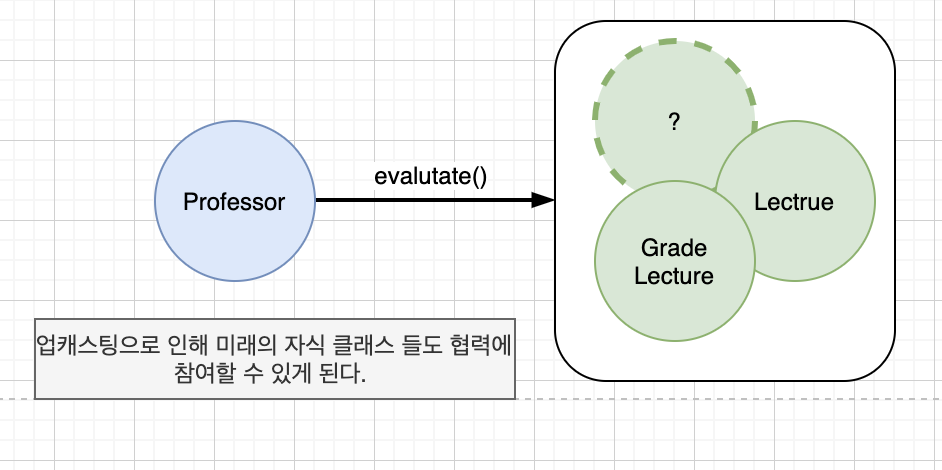
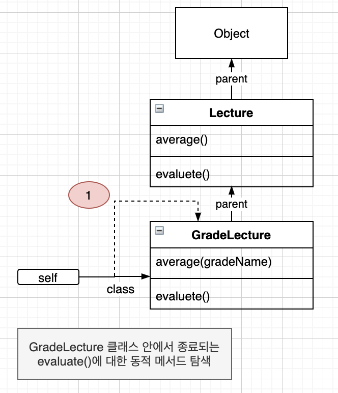
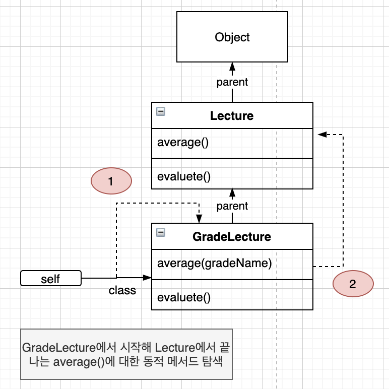
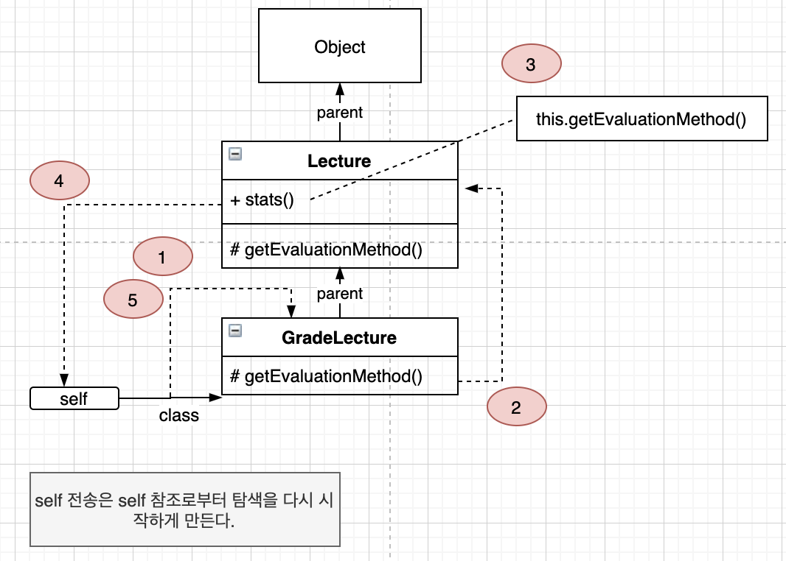
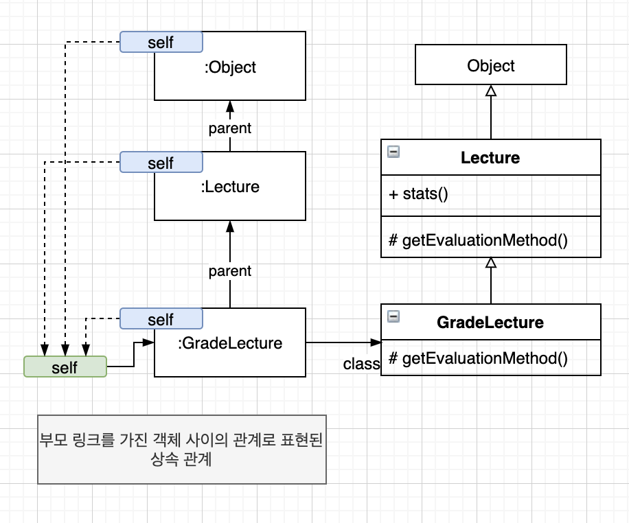

“OBJECTS 12장”
다형성
- 다형성
- 하나의 추상 인터페이스에 대해 코드를 작성, 서로 다른 구현을 연결할수 있는 능력
- 여러 타입을 대상으로 동작할 수 있는 코드를 작성할수 있는 방법
- 싱속의 일차적 목적은 코드 재사용이 아닌 서브타입의 구현
다형성 종류

- 오버로딩 다형성
- 하나의 클래스 안에 동일한 이름의 메서드가 존재하는 경우
- 강제 다형성
- 동일한 연산자를 다양한 타입에 사용할 수 있는 방식
- 1+1 = 2 / 정수에 대한 덧셈 연산자
- 1 + “a” = 1a / 연결 연산자
- 매개변수 다형성
- 제네릭 프로그래밍
- 클래스 인스턴스 변수나 메서드의 매개변수 타입을 임의의 타입으로 선언한 후 사용하는 시점에 구체적인 타입으로 지정
- List < T >
- 포함 다형성 / 서브 타입 다형성
- 메시지가 동일하더라도 수신한 객체의 타입에 따라 실제 수행되는 행동이 달라지는 능력
상속의 양면성
- 상속의 목적
- 프로그램을 구성하는 개념들을 기반으로 다형성을 가능하게 하는 타입 계층을 구축
상속을 사용한 강의 평가
- 메서드 오버라이딩
- 부모 클래스와 자식 클래스에 동일한 시그니처를 가진 메서드가 존재할 경우 자식 클래스의 메서드 우선순위가 더 높음
- 메서드 오버로딩
- 부모 클래스에서 정의한 메서드와 이름은 동일하지만 시그니처는 다른 메서드를 자식 클래스가 추가
데이터 관점의 상속

- 상속은 자식클래스의 인스턴스 안에 부모 클래스의 인스턴스를 포함
- 자식 클래스의 인스턴스는 자동으로 부모 클래스에 정의한 모든 인스턴스 변수를 내부에 포함
행동 관점의 상속
- 부모 클래스가 정의한 일부 메서드를 자식 클래스의 메서드로 포함
- 부모 클래스의 모든 퍼블릭 메서드는 자식 클래스의 퍼블릭 인터페이스에 포함
- 부모 클래스의 인스턴스에게 전송할 수 있는 모든 메시지는 자식 클래스의 인스턴스에게도 전송가능
그 이유는 런타임에 시스템이 자식 클래스에 정의되지 않은 메서드가 있을 경우 이 메서드를 부모 클래스 안에서 탐색하기 때문이다.

- 객체의 경우 서로 다른 상태를 저장할 수 있도록 각 인스턴스 별로 독립적인 메모리 할당
- 메서드의 경우 동일한 클래스의 인스턴스끼리 공유 가능, 한번만 메모리 로드 후 각 인스턴스별로 클래스를 가리키는 포인트 가짐
업캐스팅과 동적 바인딩
같은 메시지, 다른 메서드
- 업캐스팅
- 부모 클래스 타입으로 선언된 변수에 자식 클래스의 인스턴스를 할당
- 동적 바인딩
- 선언된 변수의 타입이 아니라 메시지를 수신하는 객체의 타입에 따라 실행 되는 메서드가 결정
- 컴파일 시점이 아니라 실행 시점에 메서드를 결정
업캐스팅

- 다운 캐스팅
- 부모 클래스의 인스턴스를 자식 클래스 타입으로 변환
- 명시적 타입 캐스팅 필요

동적 바인딩
- 정적 바인딩 / 초기 바인딩 / 컴파일타임 바인딩
- 호출될 함수를 컴파일 타임에 결정
- 동적 바인딩 / 지연 바인딩
- 메시지를 수신했을 때 실행될 메서드가 런타임에 결정
동적 메서드 탐색과 다형성
- self 참조
- 자바의 this
- 부모 클래스의 메서드보다 자식 클래스에 선언된 메서드가 더 높은 우선순위 가짐
- 자동적인 메시지 위임
- 자식 클래스는 이해할 수 없는 메시지는 상속 계층을 따라 부모 클래스에게 처리를 위임
- 동적인 문맥
- 메시지 수신 시 실행 시점에 self 참조를 이용해 메서드를 탐색
자동적인 메시지 위임
메시지는 상속 계층을 따라 부모 클래스에게 자동으로 위임된다.
메서드 오버라이딩

- 자식 클래스와 부모 클래스 양쪽 모두 동일한 시그니처를 가진 메서드가 구현되 있다면?
- 자식 클래스의 메서드가 먼저 검색
메서드 오버로딩

- 메서드 오버라이딩은 메서드를 감추지만 메서드 오버로딩은 사이좋게 공존
동적인 문맥
동일한 코드라고 하더라도 self 참조가 가리키는 객체에 따라 메서드 탐색을 위한 상속 계층의 범위가 동적으로 변한다. 따라서 self 참조가 가리키는 객체으 타입을 변경하므로써 객체가 실행될 문맥을 동적으로 바꿀 수 있다.

- self가 참조하는 현재 객체에 메시지를 전송하라는 의미
이해할 수 없는 메시지
정적 타입 언어와 이해 할 수 없는 메시지
- 에러 발생
1 | Lecture lecture = new GradeLecture(...); |
동적 타입 언어와 이해 할 수 없는 메시지
- self 참조가 가리키는 객체의 클래스에서부터 시작해 상속 계층을 거슬러 올라가며 메서드 탐색
self 대 super
- self 참조
- 동일한 메시지를 수신하더라도 객체의 타입에 따라 적합한 메서드를 동적으로 선택
- super 참조
- 자식 클래스에서 부모 클래스의 인스턴스 변수나 메서드에 접근하기 위해 사용
- 호출되는 메서드는 부모 클래스의 메서드가 아니라 더 상위에 위치한 조상 클래스의 메서드일 수 있음
- ‘지금 이 클래스의 부모 클래스에서부터 메서드 탐색을 시작하세요.’
- 부모 클래스의 코드에 접근할수 있으므로 중복 코드 제거
- super 전송
- 컴파일 시점에 미리 결정
- self 전송
- 메서드 탐색을 시작할 클래스를 반드시 실행 시점에 동적으로 결정
상속 대 위임
위임과 self 참조

- 메서드 탐색 중 자식 클래스의 인스턴스와 부모 클래스의 인스턴스가 동일한 self 참조를 공유
- 모든 객체지향 언어는 자동으로 self 참조를 생성하고 할당
- 위임 : 자신이 수신한 메시지를 다른 객체에게 동일하게 전달해서 처리를 요청
- 자동적인 메시지 위임
- 상속은 동적으로 메서드를 탐색하기 위해 현재 실행 문맥을 가지고 있는 self 참조를 전달
- 객체들 사이에서 메시지 전달 과정은 자동으로 이루어짐
클래스는 객체를 편리하게 정의하고 생성하기 위해 제공되는 프로그래밍 구성 요소일 뿐이며 중요한 것은 메시지와 협력이다.
… 중요한 것은 클래스 기반의 상속과 객체 기반의 위임 사이에 기본 개념과 메커니즘을 공유한다는 점이다.